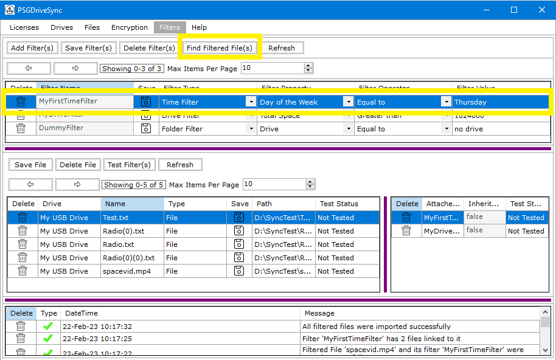
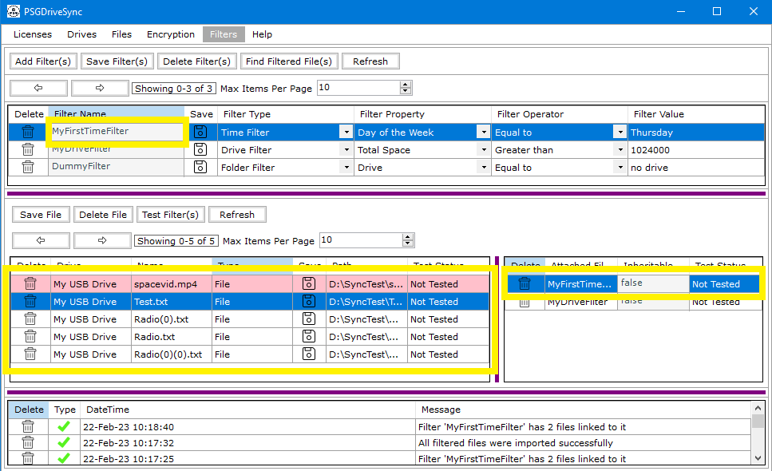

A Filter cannot be deleted as long as its linked to a filtered file. since a filter can be linked to multiple filtered files, it can be hard to figure out which files the filter is linked to. To help with matters in these situations, the "Find Filtered File(s)" has been added to the application to help find all the files linked to a filter. Following are the steps needed to be performed in order to find all the files linked to a filter.
|
1 |
Select a filtered file in the list of filtered files in the "Filters" window and click on the "Find Filtered File(s)" button on the filters control bar. |
 |
|
2 |
If the above selected filter has any files or folders linked to it then the list of filtered files should show those files or folders at the very top of the list in pink color and that is how you can tell which files / folders belong to a particular filter. |
 |